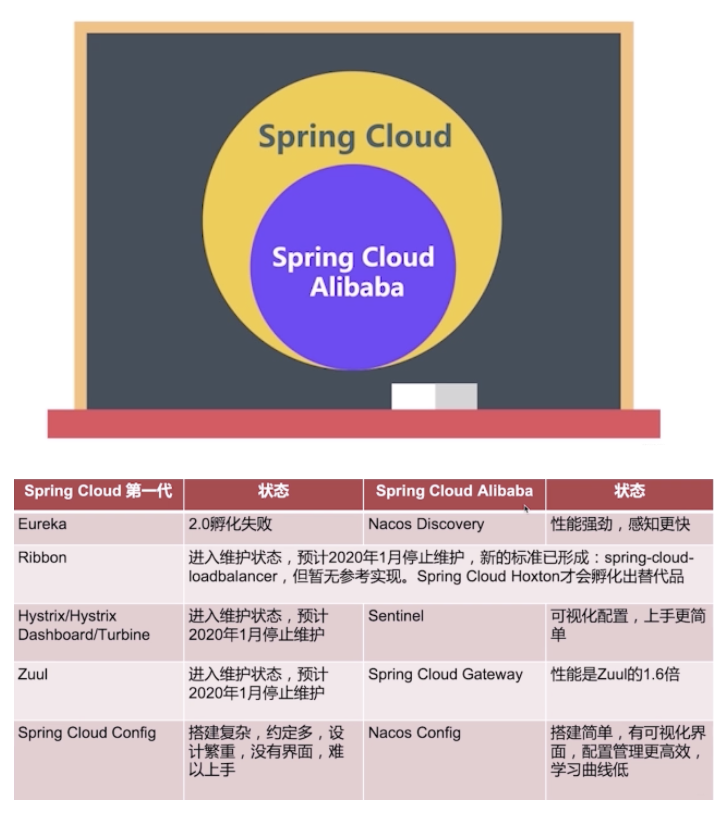

SpringCloud集成使用
前言
顾名思义是跟云相关的，云程序实际上就是指分布式应用程序，所以Spring Cloud就是为了让分布式应用程序编写更方便，更容易而提供的一组基础设施，它的核心是Spring框架，利用Spring Boot的自动配置，力图实现最简化的分布式应用程序开发。
截至目前（2021-06-22）官网 最新版本为2020.0.3版
Spring Cloud包含了一大堆技术组件，既有开源社区开发的组件，也有商业公司开发的组件，既有持续更新迭代的组件，也有即将退役不再维护的组件。
Spring Cloud变化
在2020.x之前Spring Cloud一直以来把Netflix OSS套件作为其官方默认的一站式解决方案，但是Netflix公司在2018年开始将其核心组件Hystrix、Ribbon、Zuul、Archaius等进行了闭源和设置为维护模式。
模块置于维护模式，意味着 Spring Cloud 团队将不会再向模块添加新功能，只修复重大bug以及安全问题
当然Spring Cloud 2020.0.0版本开始彻底删除掉了Netflix除Eureka外的所有组件依赖。所以学习Spring Cloud时需要注意版本(尤其看网上的各个博客教程时)：
| Release Train | 发布时间 | Spring Boot版本 | SC Commons版本 |
|---|---|---|---|
| 2020.0.x | 2020-12 | 2.4.x | 3.0.0 |
| Hoxton | 2019-07 | 2.2.x, 2.3.x (从SR5起) | 2.2.x |
| Greenwich | 2018-11 | 2.1.x | 2.1.x |
| Finchley | 2017-10 | 2.0.x | 2.0.x |
| Edgware | 2017-08 | 1.5.x | 1.3.x |
| Dalston | 2017-05 | 1.5.x | 1.2.x |
| Brixton | 2016-09 | 1.3.x | 1.1.x |
| Angel | 2016-05 | 1.2.x | 1.0.x |
如果是新项目直接上2020.x最新版本，需要注意有些Netflix的组件不再推荐使用(除Eureka和已经贡献出去的OpenFeign)，Spring Cloud的替代建议是:
| Netflix | 推荐替代品 | 说明 |
|---|---|---|
| Hystrix | Resilience4j | 受Hystrix启发，专门为Java 8 和函数式编程设计的轻量级容错框架 |
| Hystrix Dashboard / Turbine | Micrometer + Monitoring System | 专业的监控组件 |
| Ribbon | Spring Cloud Loadbalancer | Spring出品的负载均衡器 |
| Zuul 1 | Spring Cloud Gateway | Spring出品的API网关服务 |
这个也教育了我们使用Spring Cloud时尽量面向它的抽象编程，这样即使Spring Cloud换底层组件（如换熔断器、负载均衡器）等等，理论上对我们业务是无影响或者影响很小的，这都得益于它的Spring Cloud Commons抽象，那里是精华
不过以上是Spring Cloud的建议，在国内的话因为Spring Cloud Alibaba的发展还是不错的，可以结合起来挑选合适的组件
Spring Cloud Alibaba
Spring Cloud Alibaba 官网学习 是阿里巴巴结合自身微服务实践,开源的微服务全家桶。也是SpringCloud的子项目，也遵循Spring Cloud Common的抽象实现

需要注意的是如果想Spring Cloud 2020 结合 Spring Cloud Alibaba使用的话，Spring Cloud Alibaba最好也使用2021.1(第一个支持2020版spring cloud的版本)及以上版本，避免一些奇怪的问题
从官网上的介绍和一些资料显示，Spring Cloud Alibaba主要的变化是：
- 阿里开源了Nacos 这个组件可以用来代替 Spring Cloud Config和Spring Cloud Eureka:
- 通过 Nacos Server 和 spring-cloud-starter-alibaba-nacos-config 实现配置的动态变更
- 通过 Nacos Server 和 spring-cloud-starter-alibaba-nacos-discovery 实现服务的注册与发现
- 服务容错使用了Sentinel 替代了Hystrix
Spring Cloud官方推荐的Resilience4j现在发展也不错，Resilience4j自带整合了Micrometer，但Sentinel提供开箱即用的控制台，可配置规则、查看秒级监控、机器发现等，中小团队的话还是推荐Sentinel的
如果项目使用了阿里云作为云服务商，可以集成其提供的各个组件(其他的可以到官网查看)，还是比较方便的：
RocketMQ：一款开源的分布式消息系统，基于高可用分布式集群技术，提供低延时的、高可靠的消息发布与订阅服务。
Seata：阿里巴巴开源产品，一个易于使用的高性能微服务分布式事务解决方案。
Alibaba Cloud ACM：一款在分布式架构环境中对应用配置进行集中管理和推送的应用配置中心产品。
Alibaba Cloud OSS: 阿里云对象存储服务（Object Storage Service，简称 OSS），是阿里云提供的海量、安全、低成本、高可靠的云存储服务。您可以在任何应用、任何时间、任何地点存储和访问任意类型的数据。
Alibaba Cloud SchedulerX: 阿里中间件团队开发的一款分布式任务调度产品，提供秒级、精准、高可靠、高可用的定时（基于 Cron 表达式）任务调度服务。
Alibaba Cloud SMS: 覆盖全球的短信服务，友好、高效、智能的互联化通讯能力，帮助企业迅速搭建客户触达通道。
如何选型
通过以上介绍，大概我们可以了解到各个组件功能的选型了，这里我再总结下，也方便接下来各个组件的学习。当然因为这个前提条件部署于国内云环境中(一般大家都用阿里云吧)，如果有涉及到国外的云服务器那可能会推荐AWS或者Microsoft、Google等自己提供的一系列套件:
- 服务治理： 为了解决微服务架构中的服务实例维护问题(ip地址)， 实现对微服务应用实例的自动化管理。Spring Cloud Eureka 或者 Alibaba Nacos Discovery
- 客户端负载均衡：为了实现服务的高可用，合理摊分用户的请求。
Spring Cloud RibbonSpring Cloud LoadBalancer 当然也可以直接用Nginx进行负载均衡 - 服务容错保护： 为了帮助用户保障微服务的稳定性，防止在高并发的情况下，由于单个服务的延迟，可能导致所有的请求都处于延迟状态，甚至在几秒钟就使服务处于负载饱和的状态，资源耗尽，直到不可用，最终导致这个分布式系统都不可用。
Spring Cloud HystrixResilience4j 或者 Alibaba Sentinel - 声明式服务调用： 为了让使用HTTP请求远程服务时能与调用本地方法一样的编码体验，开发者完全感知不到这是远程方法，更感知不到这是个HTTP请求。Spring Cloud Openfeign
- API网关服务：为了方便进行统一的鉴权，安全控制，日志处理等。
Spring Cloud ZuulSpring Cloud Gateway - 分布式配置中心：解决分布式系统的配置管理方案。 Spring Cloud Config 或者 Alibaba Nacos Config
以上就是Spring Cloud的核心组件了，再结合Spring Security、Spring Boot Admin等组件就可以搭建Spring Cloud的项目了。个人建议如果项目引入了Nacos就直接把Eureka和Spring Cloud Config都替换掉
微服务网关
微服务网关就是一个系统，通过暴露该微服务网关系统，方便我们进行相关的鉴权，安全控制，日志统一处理，易于监控的相关功能
实现微服务网关的技术有很多:
- Nginx: 是一个高性能的HTTP和反向代理web服务器，同时也提供了IMAP/POP3/SMTP服务
- Zuul: 是 Netflix 出品的一个基于 JVM 路由和服务端的负载均衡器。
- spring-cloud-gateway: 是spring 出品的 基于spring 的网关项目，集成断路器，路径重写，性能比Zuul好。
为什么要使用网关
不同的微服务一般会有不同的网络地址，而外部客户端可能需要调用多个服务的接口才能完成一个业务需求，如果让客户端直接与各个微服务通信，会有以下的问题：
- 客户端会多次请求不同的微服务，增加了客户端的复杂性
- 存在跨域请求，在一定场景下处理相对复杂
- 认证复杂，每个服务都需要独立认证
- 难以重构，随着项目的迭代，可能需要重新划分微服务。例如，可能将多个服务合并成一个或者将一个服务拆分成多个。如果客户端直接与微服务通信，那么重构将会很难实施
- 某些微服务可能使用了防火墙/浏览器不友好的协议，直接访问会有一定的困难
以上这些问题可以借助网关解决。
网关是介于客户端和服务器端之间的中间层，所有的外部请求都会先经过 网关这一层。也就是说，API 的实现方面更多地考虑业务逻辑，而安全、性能、监控可以交由 网关来做，这样既提高业务灵活性又不缺安全性
微服务网关的优点
- 安全 ，只有网关系统对外进行暴露，微服务可以隐藏在内网，通过防火墙保护。
- 易于监控。可以在网关收集监控数据并将其推送到外部系统进行分析。
- 易于认证。可以在网关上进行认证，然后再将请求转发到后端的微服务，而无须在每个微服务中进行认证。
- 减少了客户端与各个微服务之间的交互次数
- 易于统一授权。
常用技术框架
Zookeeper
Zookeeper是一个开源的分布式协调服务，由雅虎公司创建，见名思意Zookeeper就像动物管理员一样管理动物(应用组件)，负责分布式组件环境的协调工作。
他的目标是可以提供高性能、高可用和顺序访问控制的能力，同时也是为了解决分布式环境下数据一致性的问题。
应用场景：
- 命名服务Name Service，依赖Zookeeper可以生成全局唯一的节点ID，来对分布式系统中的资源进行管理
- 分布式协调，这是Zookeeper的核心使用了。利用Wather的监听机制，一个系统的某个节点状态发生改变，另外系统可以得到通知
- 集群管理，分布式集群中状态的监控和管理，使用Zookeeper来存储
- Master选举，利用Zookeeper节点的全局唯一性，同时只有一个客户端能够创建成功的特点，可以作为Master选举使用，创建成功的则作为Master
- 分布式锁，利用Zookeeper创建临时顺序节点的特性
补充一些概念解释
集群
同一个业务，部署在多个服务器上
计算机集群简称集群是一种计算机系统，它通过一组松散集成的计算机软件和/或硬件连接起来高度紧密地协作完成计算工作。在某种意义上，他们可以被看作是一台计算机。集群系统中的单个计算机通常称为节点，通常通过局域网连接，但也有其它的可能连接方式。集群计算机通常用来改进单个计算机的计算速度和/或可靠性。一般情况下集群计算机比单个计算机，比如工作站或超级计算机性能价格比要高得多
集群技术特点：
- 通过多台计算机完成同一个工作，达到更高的效率。
- 两机或多机内容、工作过程等完全一样。如果一台死机，另一台可以起作用
集群：多台服务器部署相同应用构成一个集群
作用：通过负载均衡设备共同对外提供服务
分布式
一个业务分拆多个子业务，部署在不同的服务器上
分布式系统是一组计算机，通过网络相互连接传递消息与通信后并协调它们的行为而形成的系统。组件之间彼此进行交互以实现一个共同的目标
一个业务分拆多个子业务，部署在不同的服务器上(不同的服务器，运行不同的代码，为了同一个目的)
分布式：不同模块部署在不同服务器上
作用：分布式解决网站高并发带来问题
SOA
业务系统分解为多个组件，让每个组件都独立提供离散，自治，可复用的服务能力，通过服务的组合和编排来实现上层的业务流程
作用：简化维护,降低整体风险,伸缩灵活
微服务
架构设计概念,各服务间隔离（分布式也是隔离）,自治（分布式依赖整体组合）其它特性(单一职责,边界,异步通信,独立部署)是分布式概念的跟严格执行SOA到微服务架构的演进过程
作用：各服务可独立应用，组合服务也可系统应用
CAP理论
CAP理论是分布式架构中重要理论
- 一致性(Consistency) (所有节点在同一时间具有相同的数据)
- 可用性(Availability) (保证每个请求不管成功或者失败都有响应)
- 分隔容忍(Partition tolerance) (系统中任意信息的丢失或失败不会影响系统的继续运作)
常见问题
- spring-cloud 2020.0.0以上版本无法连接nacos config解决办法
加入spring-cloud-starter-bootstrap:
1 | <dependency> |
如果还不行，则去除spring-cloud-context:
1 | <dependencies> |
在spring cloud config client中，启动时不在使用spring-cloud-context来加载bootstrap.yml来启动了。而是改为spring-cloud-starter-bootstrap作为引导。所以需要把boot-starter-bootstrap加入代码中.
但是nacos中的依赖引入了spring-cloud-context。导致bootstrap和context两个包冲突。因此需要在spring-cloud-starter-alibaba-nacos-discovery和spring-cloud-starter-alibaba-nacos-config两个包中把context包去除
最后附上自己研究并搭建的基于Spring Cloud 2020和Spring Cloud Alibaba 2021 简易版 spring-cloud-jonesun